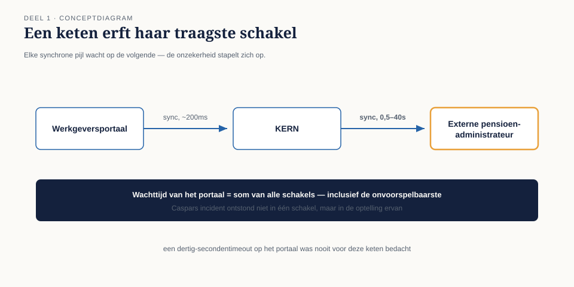

1.0 De koppeling die zeven keer per dag vastliep
Sectie 1 van 9Op de derde maandag na de stopzetting van WGP 2.0 kreeg Caspar Rijnders zijn eerste incident als integratiearchitect bij Meridiaan Pensioen N.V. De koppeling tussen het Werkgeversportaal en KERN, het kernsysteem, was die ochtend zeven keer blijven hangen. Niet gecrasht — hangen. Het portaal wachtte op een antwoord van KERN dat niet kwam, de gebruiker zag een draaiend wieltje, en na dertig seconden verscheen een foutmelding die niemand kon plaatsen: "time-out bij mutatieverwerking".
De koppeling zelf was, technisch gezien, keurig gebouwd: een REST-aanroep, synchroon, met een duidelijk contract. Het Werkgeversportaal stuurt een mutatie, wacht op het antwoord, en toont dat antwoord aan de gebruiker. Zolang KERN binnen een paar honderd milliseconden reageert, werkt dit onberispelijk.
Het probleem was niet de koppeling. Het probleem was wat er sinds twee weken ván afhing. KERN was uitgebreid met een asynchrone verwerkingsstap — een validatie tegen de externe pensioenadministrateur, die zelf weer afhankelijk was van een derde partij. Die validatie kon een halve seconde duren, of veertig seconden, afhankelijk van de belasting bij de administrateur. Het Werkgeversportaal wist dat niet. Het deed wat het altijd deed: de aanroep doen en wachten, met een time-out van dertig seconden omdat niemand zich ooit had voorgesteld dat het langer zou kunnen duren.
Caspar loste het incident die dag op door de time-out naar negentig seconden te verhogen. Dat is geen oplossing, het is uitstel — en dat wist hij, want binnen een kwartaal zou de externe administrateur een nieuwe koppeling opleveren die nóg een stap toevoegde.

Dit deel gaat over waarom die oplossing structureel niet houdbaar is, en wat het alternatief is.